Lee esta página una sola vez. Te ahorra la mayoría de las dudas.
¿Qué es Metryco?
Metryco es el sistema con el que el laboratorio lleva todo el ciclo de un servicio de calibración, desde que el cliente pide una cotización hasta que se entrega el certificado y se cobra la factura. Reemplaza hojas de Excel sueltas y el sistema anterior en PHP.
El flujo normal es este:
Cliente → Cotización → Reporte de Servicio → Asignación de equipo a un técnico
→ Calibración + Incertidumbre → Certificado → Entrega → Cobranza
Requisitos
Una computadora con Google Chrome o Microsoft Edge actualizado. También funciona en tablet.
La dirección del sistema (URL) que te dé el administrador, y tu usuario y contraseña.
Conexión a internet. Si se cae la conexión, el sistema avisa; espera y vuelve a intentar.
Roles: qué puede hacer cada quien
Tu rol decide qué opciones del menú ves. Si no ves una opción que este manual menciona, es porque tu rol no la tiene: pídesela al administrador.
Rol
Para quién
Qué ve, a grandes rasgos
Admin
Responsable del sistema
Todo, incluyendo Administración (usuarios, colores, permisos, auditoría).
Coordinador
Jefe de laboratorio
Todo lo operativo y comercial. No ve Administración.
Ventas
Área comercial
Clientes, Cotizaciones, Cuentas por Cobrar y consulta de Reportes/Equipos.
Técnico
Quien calibra
Reportes y sus asignaciones, Equipos, Patrones (consulta), Performance e Incertidumbre.
El administrador puede cambiar en vivo qué rol ve cada opción desde Administración → Roles del Menú. Por eso dos laboratorios pueden tener el menú distinto.
2 · Entrar y salir del sistema
2.1 Iniciar sesión
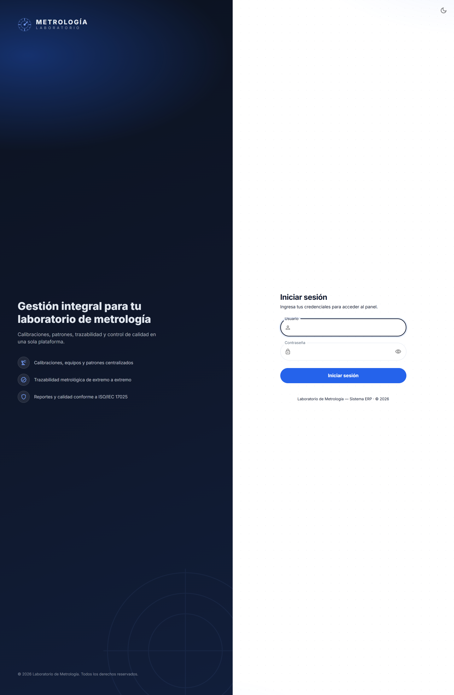
Pantalla de inicio de sesión. Es lo primero que aparece si todavía no has entrado.
Abre el navegador y escribe la dirección del sistema que te dieron.
En Usuario escribe tu nombre de usuario (sin espacios, normalmente en minúsculas).
En Contraseña escribe tu contraseña. El icono del ojo 👁 te deja verla para revisar que no haya errores.
Haz clic en Iniciar sesión. Si los datos son correctos, entras al Panel general.
Si te equivocas de contraseña varias veces seguidas, el sistema te bloquea unos minutos por seguridad. Espera y vuelve a intentar; no sigas probando.
¿Olvidaste tu contraseña? El sistema no tiene "recuperar contraseña" por correo. Pídele al administrador que te ponga una nueva desde Administración → Usuarios.
2.2 Cerrar sesión
Arriba a la derecha, haz clic en Cerrar sesión (texto rojo). Hazlo siempre si usas una computadora compartida.
2.3 Cambiar mi contraseña, mi foto y mi firma
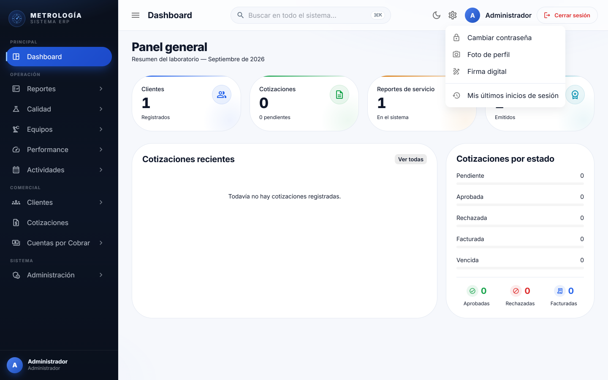
Menú de mi cuenta. Se abre con el icono de engrane ⚙ de la barra superior.
Haz clic en el engrane ⚙ arriba a la derecha.
Elige la opción que necesites:
Cambiar contraseña — pide la actual y la nueva (dos veces).
Foto de perfil — sube una imagen; aparece como tu avatar.
Firma digital — sube la imagen de tu firma. Importante: esta firma es la que sale en los certificados que tú revisas o autorizas.
Mis últimos inicios de sesión — para revisar si alguien más usó tu cuenta.
La contraseña nueva debe cumplir la política mínima (longitud y complejidad). Si el sistema la rechaza, usa una más larga con mayúsculas, números y un símbolo.
3 · Cómo moverse por el sistema
Todas las pantallas tienen la misma estructura. Si entiendes esta, entiendes todas.
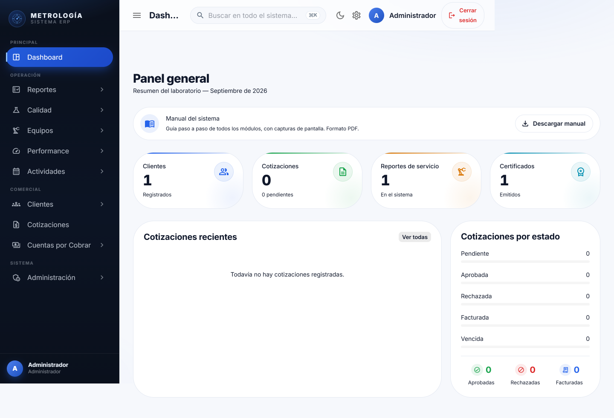
Las tres zonas de la pantalla.
1Menú lateral (izquierda, oscuro): todos los módulos, agrupados por sección. El módulo abierto se resalta en azul.
2Barra superior: botón para ocultar el menú (☰), búsqueda global, modo oscuro (🌙), engrane de mi cuenta ⚙, mi nombre y Cerrar sesión.
3Área de trabajo: el contenido del módulo. Arriba lleva el título y, a la derecha, los botones de acción (por ejemplo "Nuevo", "Exportar").
3.1 Menú lateral
Los módulos con una flecha › tienen submenú: haz clic para desplegarlo.
El botón ☰ de la barra superior oculta o muestra el menú para tener más espacio.
3.2 Búsqueda global
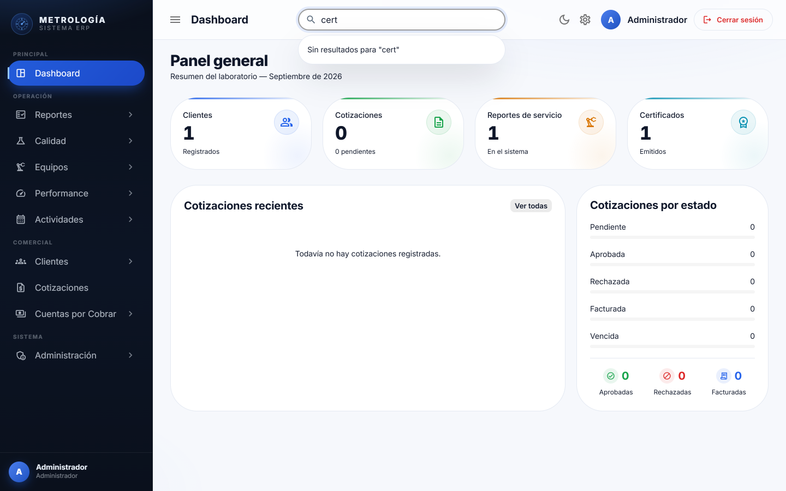
Buscar en todo el sistema. Escribe un folio, un cliente, un equipo… y salta directo al resultado.
Haz clic en la barra "Buscar en todo el sistema…" (o pulsa Ctrl+K).
Escribe lo que buscas: un folio de reporte, el nombre de un cliente, el ID de un equipo, etc.
Haz clic en un resultado para ir a esa ficha.
3.3 Modo oscuro
El icono de luna/sol en la barra superior cambia entre tema claro y oscuro. Es una preferencia personal y se recuerda en tu navegador.
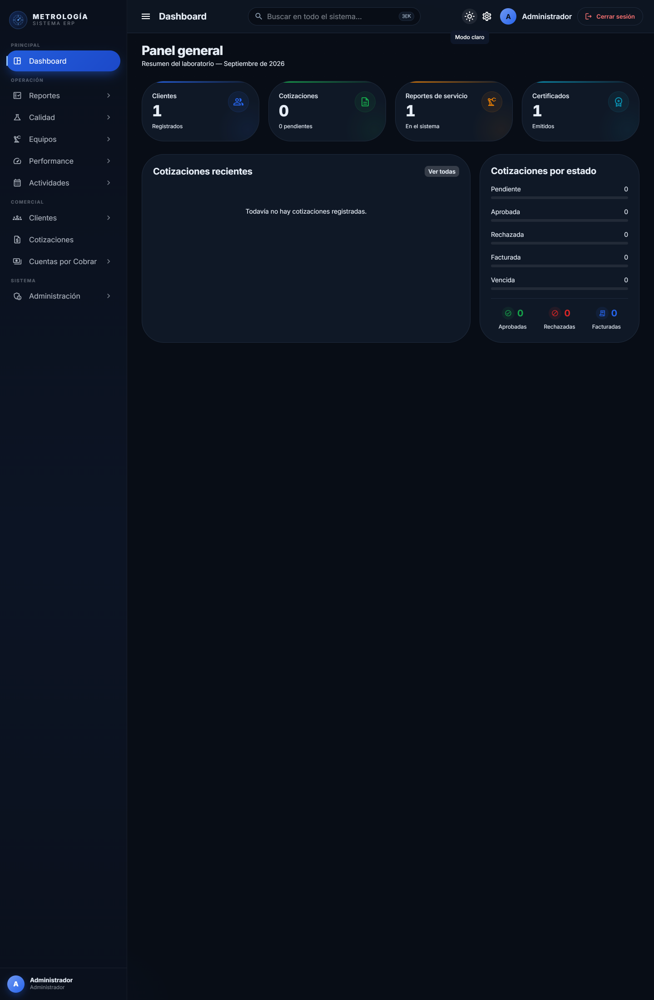
El mismo Panel general en modo oscuro.
Las tablas se pueden ordenar haciendo clic en el encabezado de una columna, y casi todas tienen buscador y filtros arriba, además de paginación ("Filas: 10", "1–10 de 34") abajo a la derecha.
4 · Panel general (Dashboard)
Es la pantalla de inicio. Da un vistazo rápido del laboratorio.
Panel general.
Tarjetas de arriba: totales de Clientes, Cotizaciones, Reportes de servicio y Certificados. Haz clic en una para ir a ese módulo.
Cotizaciones recientes: las últimas registradas; clic en una para abrirla.
Cotizaciones por estado: cuántas hay pendientes, aprobadas, rechazadas, facturadas y vencidas.
Manual del sistema: el recuadro con el botón "Descargar manual" abre este PDF.
El técnico y otros roles sin permiso comercial no ven las tarjetas ni los bloques de Clientes/Cotizaciones. Es normal.
5 · Clientes
AdminCoordinadorVentas · Menú: Clientes → Consultar Clientes / Nuevo Cliente
5.1 Consultar clientes
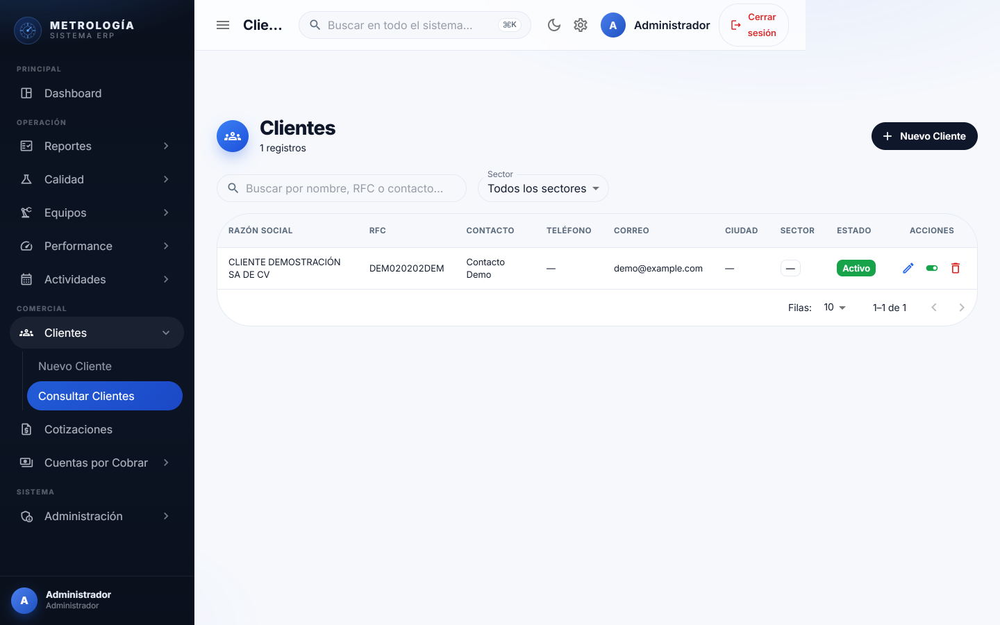
Listado de clientes. Buscador arriba; acciones por fila a la derecha.
Escribe en el buscador el nombre o RFC para filtrar.
En cada fila, el icono de lápiz abre la ficha del cliente para editarla.
5.2 Alta de un cliente nuevo
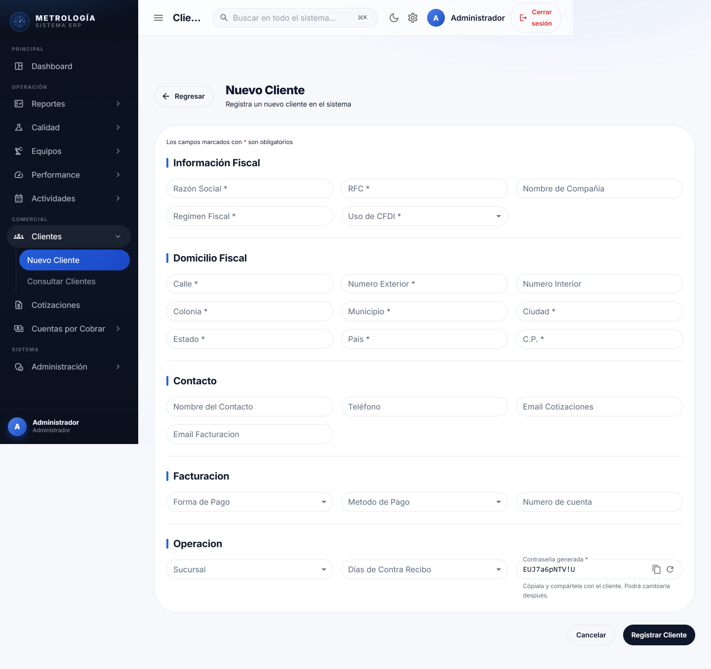
Formulario de cliente. Los campos con * son obligatorios.
Menú Clientes → Nuevo Cliente.
Llena Nombre / Razón social y RFC (obligatorios).
Agrega el domicilio fiscal y, si aplica, la sucursal.
En Contacto pon nombre, teléfono y el correo para cotizaciones (ahí llegan los envíos comerciales).
Haz clic en Guardar. El cliente ya se puede elegir al crear cotizaciones y reportes.
El RFC no se puede repetir. Si el sistema dice que ya existe, búscalo en el listado en vez de crear un duplicado.
6 · Cotizaciones
AdminCoordinadorVentas · Menú: Cotizaciones
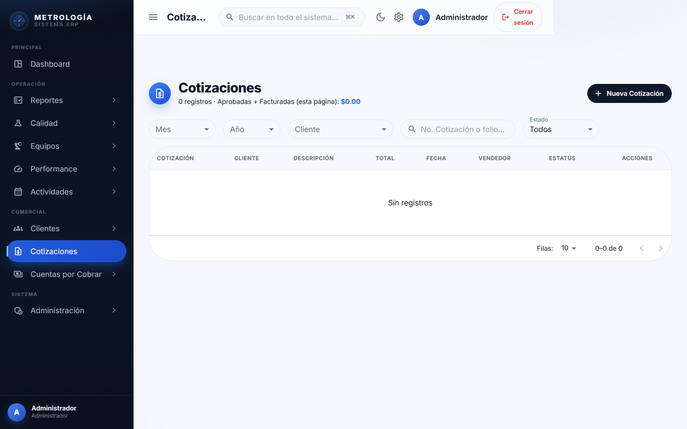
Listado de cotizaciones, con filtros por mes, año, cliente y estado.
6.1 Crear una cotización
Clic en Nueva Cotización (arriba a la derecha).
Elige el cliente. Si no existe, créalo primero en Clientes.
Agrega los conceptos (servicios de calibración): descripción, cantidad y precio unitario. El sistema calcula el subtotal, IVA y total.
Revisa vigencia y condiciones.
Guardar. La cotización nace en estado Pendiente.
6.2 Estados de una cotización
Estado
Qué significa
Pendiente
Creada, aún sin respuesta del cliente.
Aprobada
El cliente la aceptó. Ya se le puede abrir un Reporte de Servicio.
Rechazada
El cliente no la tomó.
Facturada
Se generó la factura correspondiente.
Vencida
Pasó su fecha de vigencia sin aprobarse.
6.3 Imprimir / enviar
Abre la cotización desde el listado.
Usa el botón Imprimir (icono PDF). Se abre una vista en formato carta.
En el navegador elige "Guardar como PDF" y ya lo puedes adjuntar en un correo al cliente.
Cuando un reporte nace desde una cotización aprobada, quedan ligados: desde el reporte puedes abrir la cotización con un clic, y viceversa.
7 · Reportes de Servicio
Todos los roles · Menú: Reportes → Consultar. El Reporte de Servicio es el "expediente" de un ingreso de equipos del cliente.
7.1 El listado
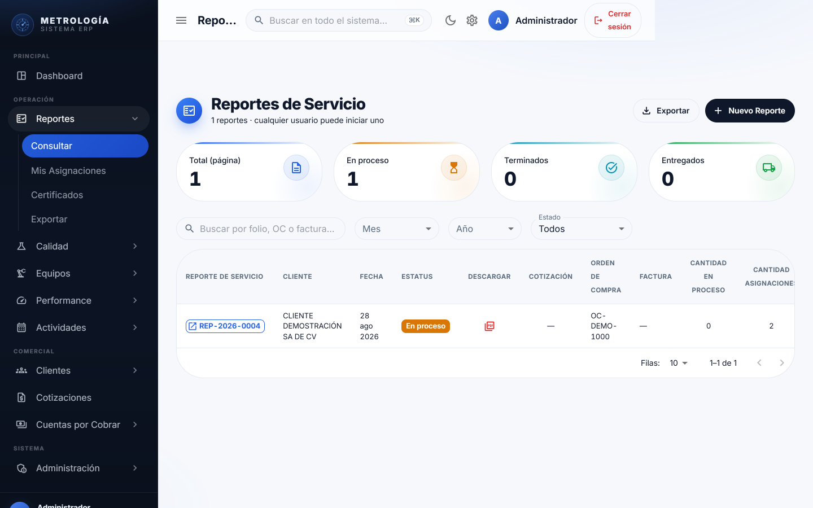
Listado de Reportes de Servicio.
1Tarjetas resumen: cuántos hay en proceso, terminados y entregados.
2Filtros: buscador por folio/OC/factura, mes, año y estado.
3Columna Reporte de Servicio: el folio en azul; clic para abrir el detalle.
4Columna Descargar: el icono PDF rojo genera el Reporte de Servicio imprimible.
5Columna Cotización: si el reporte viene de una, aquí está el enlace.
7.2 Crear un reporte
AdminCoordinadorVentas
Clic en Nuevo Reporte.
Elige el cliente.
Opcional: escribe la Orden de Compra y unas observaciones.
Crear. El sistema le pone un folio (por ejemplo REP-2026-0004) y te lleva al detalle.
7.3 El detalle del reporte
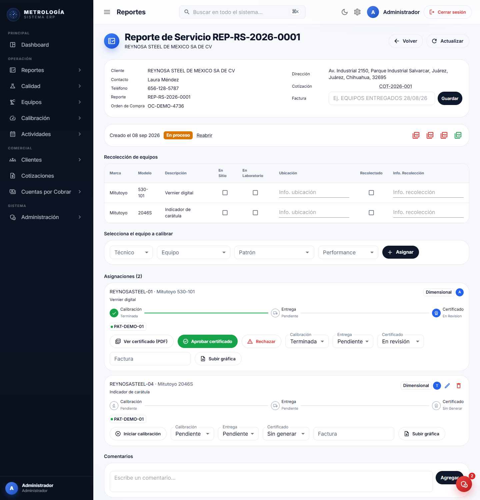
Detalle del reporte. Desde aquí se hace todo el trabajo del servicio.
1Datos del cliente y del reporte: cliente, contacto, OC, y el campo Factura (se guarda con su botón).
2Estado del reporte (En proceso / Terminado…) y los botones PDF: Reporte de Servicio, Entrega de equipo, Entrega de certificados y Paquete de certificados.
3Recolección de equipos: marca si cada equipo está en sitio / en laboratorio / recolectado, con notas de ubicación.
4Selecciona el equipo a calibrar: aquí se crean las asignaciones (ver 7.4).
5Asignaciones: una tarjeta por equipo, con su barra de 3 pasos (Calibración → Entrega → Certificado) y sus selectores de estado.
6Comentarios e Historial (quién hizo qué y cuándo).
7.4 Asignar un equipo al reporte
En "Selecciona el equipo a calibrar", elige el Técnico que hará el trabajo.
Elige el Equipo del cliente. Si no aparece, primero da de alta el equipo (ver sección 8) con ese cliente.
Elige el o los Patrones que se usarán. Si un patrón está vencido, el sistema avisa y no deja emitir el certificado con él.
Opcional: elige la plantilla de Performance a aplicar.
Clic en Asignar. Aparece una tarjeta nueva en Asignaciones.
Un mismo equipo no se puede asignar dos veces al mismo reporte. Si necesitas "como se encontró" y "como se dejó", eso se maneja dentro del cálculo de incertidumbre, no con dos asignaciones.
7.5 Llevar el seguimiento (los 3 estados)
Cada asignación tiene tres selectores. Cámbialos conforme avanza el trabajo:
Dominio
Valores
Quién
Calibración
Pendiente → En proceso → Terminada
El técnico
Entrega
Pendiente → Entregado
Técnico / Coordinador
Certificado
Sin generar → En revisión → Autorizado
Se mueve solo al emitir/autorizar el certificado
El botón Subir gráfica de cada asignación permite adjuntar la imagen de la gráfica de calibración que después sale en el informe.
7.6 Cerrar el reporte
Cuando todas las asignaciones están entregadas y con certificado, usa Finalizar Reporte (abajo a la derecha). Si necesitas reabrirlo, usa Reabrir junto al estado.
7.7 Mis Asignaciones
AdminCoordinadorTécnico · Menú: Reportes → Mis Asignaciones
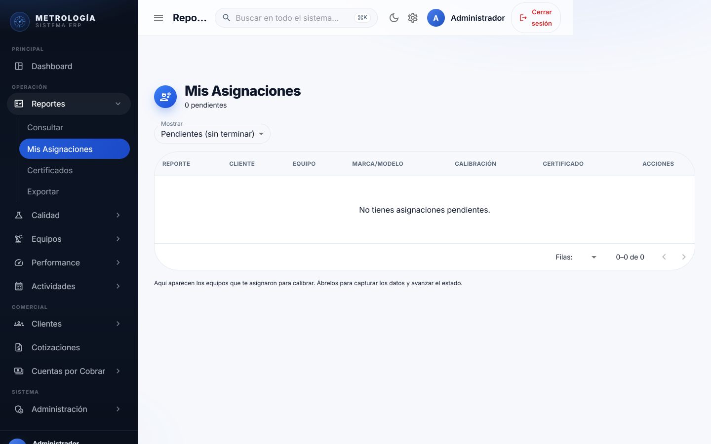
Mis Asignaciones. El técnico ve aquí, en un solo lugar, todo lo que tiene pendiente de calibrar.
Historial de certificados y revisión de próximos vencimientos.
9 · Patrones
Alta: AdminCoordinador · Consulta: también Técnico · Menú: Equipos → Consultar Patrones / Alta de Patrón. Son los instrumentos de referencia del laboratorio.
9.1 Consultar patrones
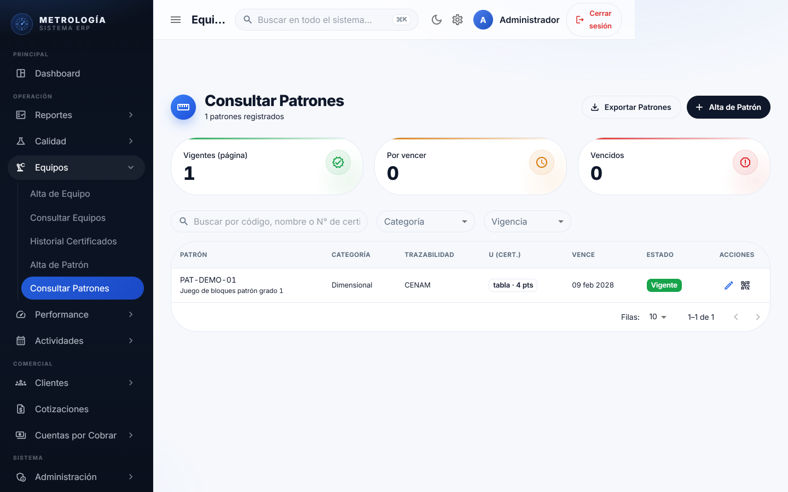
Listado de patrones. La columna Estado muestra Vigente / Por vencer / Vencido.
Estado
Regla
Vigente
Faltan más de 30 días para el vencimiento.
Por vencer
Faltan 30 días o menos.
Vencido
Ya pasó la fecha. No se puede usar para emitir certificados.
9.2 Alta de patrón
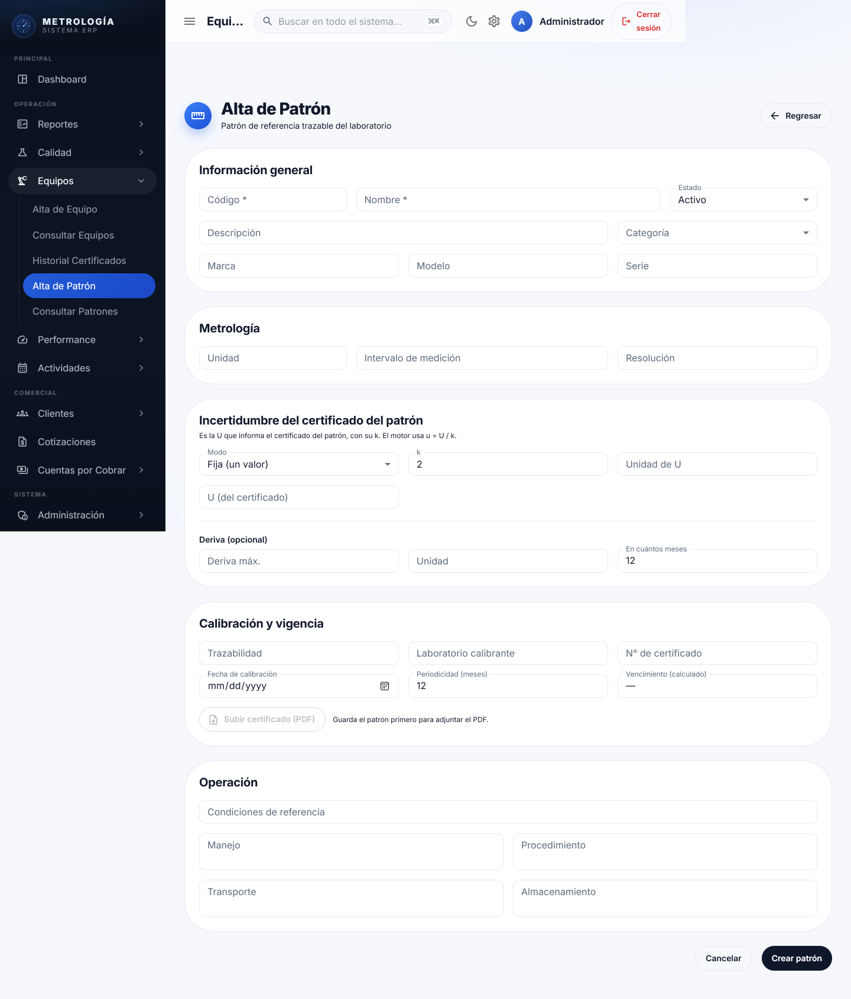
Alta de patrón. Está dividido en tarjetas: Información general, Metrología, Incertidumbre del certificado, Calibración y vigencia, Operación.
Metrología: unidad, intervalo de medición y resolución.
Incertidumbre del certificado del patrón — es la U que informa el certificado del patrón, con su k. El motor de incertidumbre usa u = U / k. Elige el modo:
Fija: un solo valor de U para todo el intervalo.
Tabla por punto: pares {nominal, U}; el motor interpola entre ellos.
Deriva (opcional): cuánto cambió el patrón entre calibraciones y en cuántos meses. Se convierte en una contribución rectangular.
Calibración y vigencia: trazabilidad (CENAM, NIST…), laboratorio que lo calibró, N° de certificado, fecha y periodicidad en meses. El vencimiento se calcula solo (fecha + periodicidad) y se muestra en gris.
Operación: condiciones de referencia, manejo, procedimiento, transporte, almacenamiento.
Guardar.
9.3 Adjuntar el certificado del patrón (PDF)
Guarda primero el patrón (el botón de subir está deshabilitado hasta entonces).
En Calibración y vigencia, clic en Subir certificado (PDF) y elige el archivo.
Queda una etiqueta con el nombre del archivo. Se puede descargar después desde la ficha del patrón.
9.4 Etiqueta QR del patrón
Igual que con los equipos: en el listado de patrones, icono QR → tamaño → Imprimir / Descargar.
Al asignar un equipo a un reporte, si el equipo trae patrones sugeridos, ya vienen preseleccionados. El presupuesto de incertidumbre toma automáticamente la U y la deriva del patrón elegido.
Performance. Registra el desempeño del instrumento en los puntos de calibración (lecturas, error, criterio PASA / NO PASA).
Un registro de Performance se liga a una asignación (equipo dentro de un reporte).
Se capturan los puntos nominales, las lecturas y el EMP; el sistema calcula el error y marca PASA o NO PASA.
Estos puntos alimentan el informe de calibración del certificado.
11 · Incertidumbre
AdminCoordinadorTécnico · Menú: Performance → Incertidumbre y Plantillas de Incertidumbre. Método GUM (JCGM 100:2008) + EA-4/02. El cálculo es determinístico: los mismos datos siempre dan el mismo resultado.
11.1 Análisis de incertidumbre
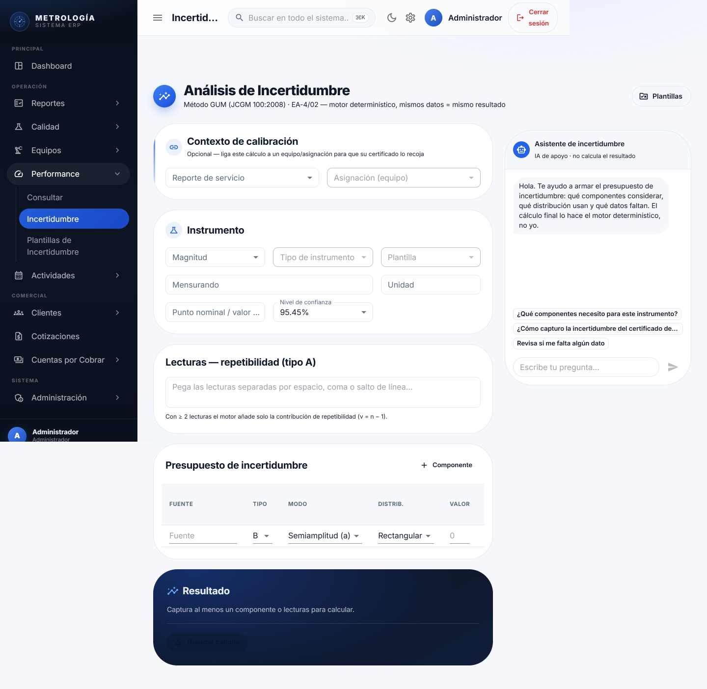
Análisis de incertidumbre. Izquierda: los datos. Derecha: el asistente de apoyo (no calcula, solo orienta).
Contexto de calibración (opcional pero recomendado): elige el Reporte de servicio y la Asignación (equipo). Así el certificado recoge este cálculo automáticamente.
Instrumento: elige Magnitud, Tipo de instrumento y una Plantilla. La plantilla precarga las contribuciones típicas.
Captura Mensurando, Unidad, Punto nominal y Nivel de confianza (por defecto 95.45%).
Lecturas — repetibilidad (tipo A): pega las lecturas separadas por espacio o coma. Con 2 o más, el motor añade la contribución de repetibilidad (grados de libertad v = n − 1).
Presupuesto de incertidumbre: revisa/ajusta cada contribución (fuente, tipo A/B, modo, distribución, valor, divisor, coeficiente de sensibilidad, grados de libertad). Usa + Componente para agregar una.
El bloque Resultado muestra la incertidumbre combinada y la expandida (U) con su k. Clic en Guardar cálculo.
Un cálculo guardado pasa por revisión y aprobación antes de usarse en un certificado.
La contribución del patrón (su U y su deriva) la inyecta el motor automáticamente desde el patrón elegido en la asignación. No la captures a mano.
11.2 Plantillas de incertidumbre
AdminCoordinador
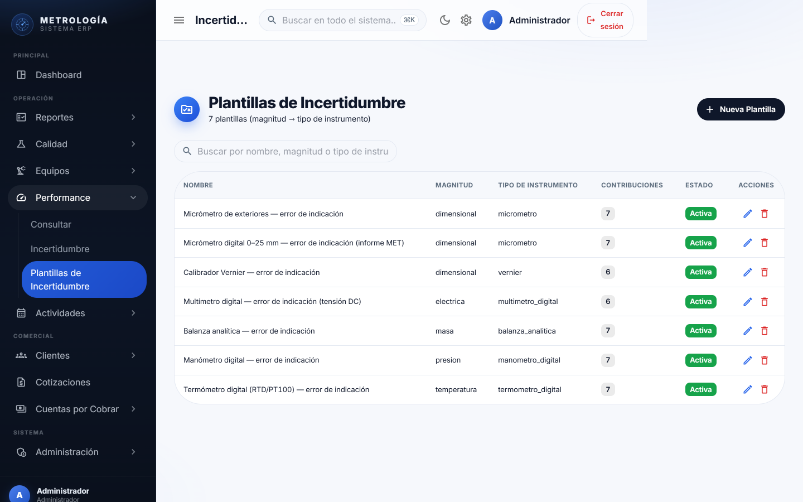
Plantillas de incertidumbre. Una plantilla es un presupuesto reutilizable por magnitud + tipo de instrumento.
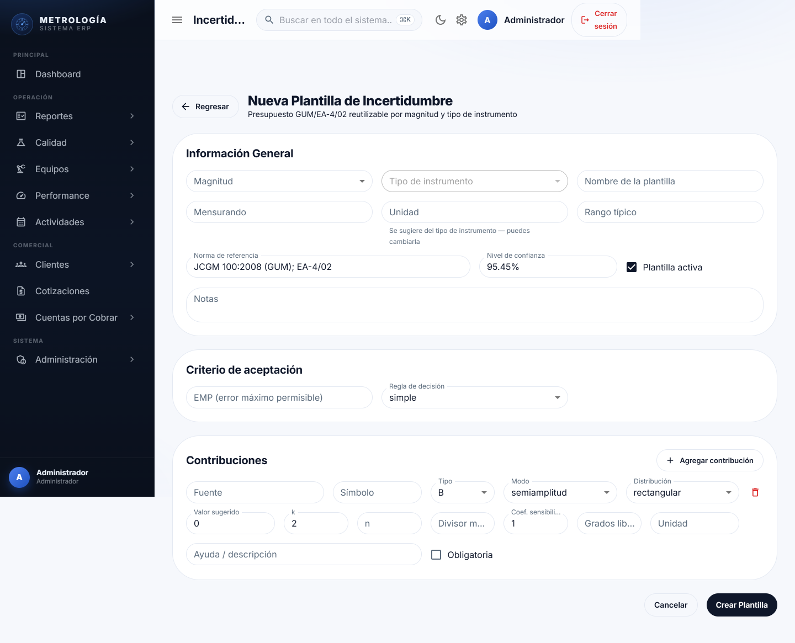
Nueva plantilla.
Menú Plantillas de Incertidumbre → Nueva.
Información general: magnitud, tipo de instrumento, nombre de la plantilla, mensurando, unidad, rango típico, norma y nivel de confianza.
Criterio de aceptación: EMP y regla de decisión (simple, o con banda de guarda).
Contribuciones: agrega cada fuente de incertidumbre con + Agregar contribución (fuente, símbolo, tipo, modo, distribución, valor sugerido, k, divisor, coef. de sensibilidad, grados de libertad, si es obligatoria).
Guardar. La plantilla queda disponible al hacer un análisis para esa magnitud/instrumento.
Consejo: crea una plantilla por cada tipo de instrumento que calibras seguido (vernier, micrómetro, manómetro, balanza…). Ahorra capturar las mismas contribuciones cada vez.
12 · Certificados de Calibración
AdminCoordinador · Menú: Reportes → Certificados
12.1 El listado
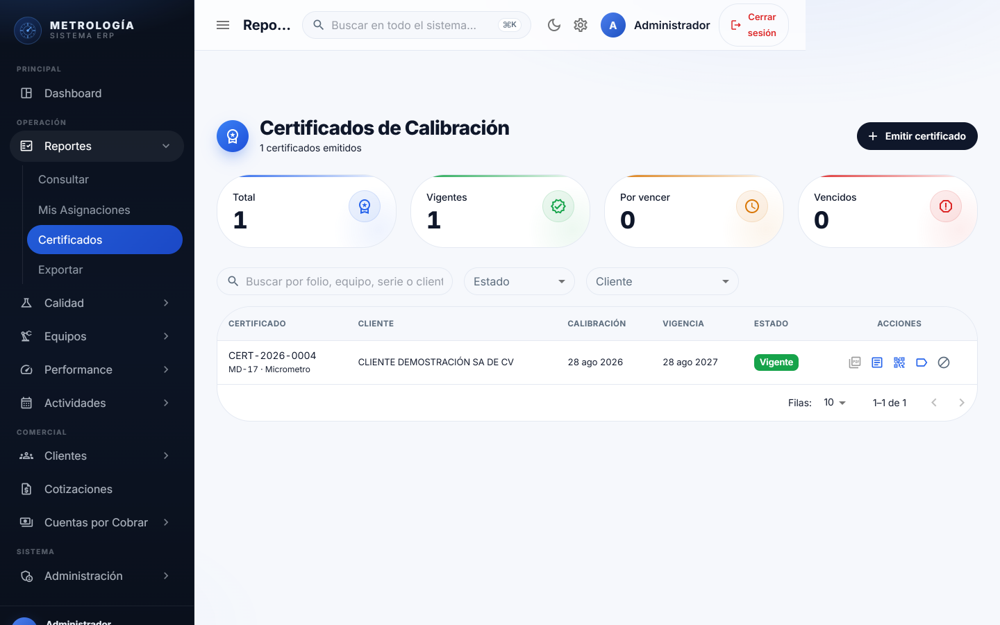
Certificados de calibración emitidos, con su estado y vigencia.
12.2 Emitir un certificado
El certificado se emite desde una asignación cuya calibración esté Terminada y que tenga sus cálculos de incertidumbre aprobados.
En el detalle del reporte, en la asignación, usa la acción de generar certificado (mueve el dominio "Certificado" a En revisión).
Al autorizar (rol calidad), el certificado toma un folio, un token público con QR y queda Vigente.
El certificado guarda un snapshot (copia congelada) del equipo, del cliente y de los patrones usados: aunque después cambien esos datos, el certificado no se altera.
12.3 Informe imprimible
Abre el certificado y usa Imprimir / PDF. Se abre el informe en formato MET (carta), con encabezado del laboratorio, datos del equipo, tabla de resultados por punto, gráfica de calibración, patrones utilizados y firmas.
En el navegador: destino "Guardar como PDF", tamaño Carta o A4.
Las firmas que aparecen (Elaboró, Aprobación técnica, Calidad) son las imágenes de firma que cada usuario cargó en su perfil.
12.4 Verificación pública por QR
Cada certificado lleva un QR. Al escanearlo, cualquier persona (sin usuario del sistema) llega a una página que confirma que el certificado es auténtico y muestra sus datos principales. Es la forma en que el cliente valida el documento.
Nunca compartas el enlace de administración de un certificado. El enlace válido para el cliente es el del QR / verificación pública.
13 · Calidad
AdminCoordinador · Menú: Calidad → Consultar
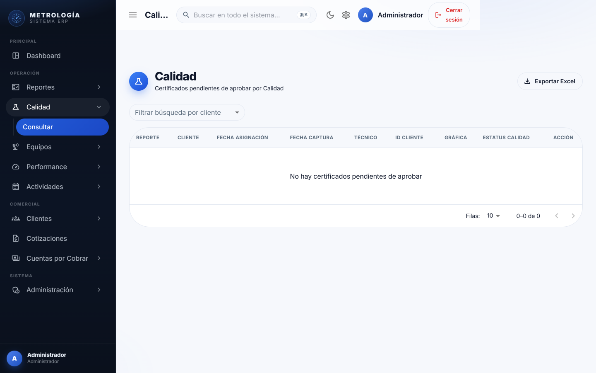
Calidad. Seguimiento de los certificados en revisión y de los indicadores del sistema de gestión (ISO/IEC 17025).
14 · Cuentas por Cobrar
Administrar pagos: AdminCoordinador · Consultar calendario: también Ventas · Menú: Cuentas por Cobrar
14.1 Administrar pagos
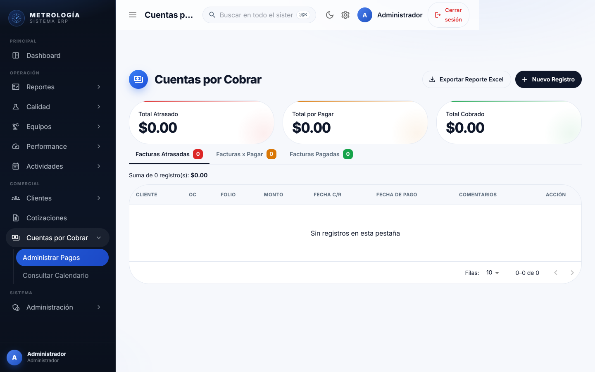
Cuentas por Cobrar. Facturas por cobrar, con su antigüedad y estatus.
Registra pagos (total o parcial) contra cada factura.
El estatus cambia a Pagada cuando el saldo llega a cero.
14.2 Calendario de pagos
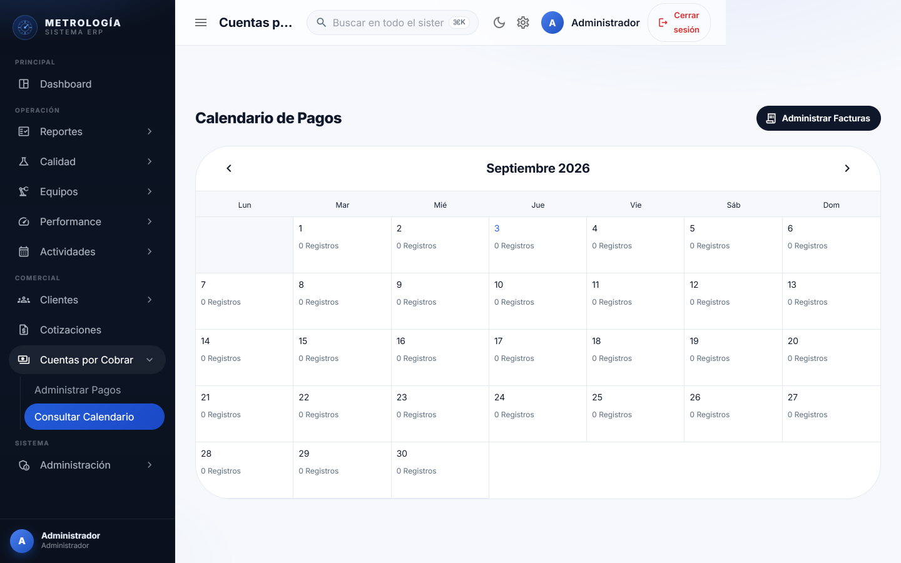
Calendario de pagos. Vencimientos esperados por día/semana; sirve para priorizar la gestión de cobranza.
15 · Actividades
AdminCoordinador · Menú: Actividades → Calendario
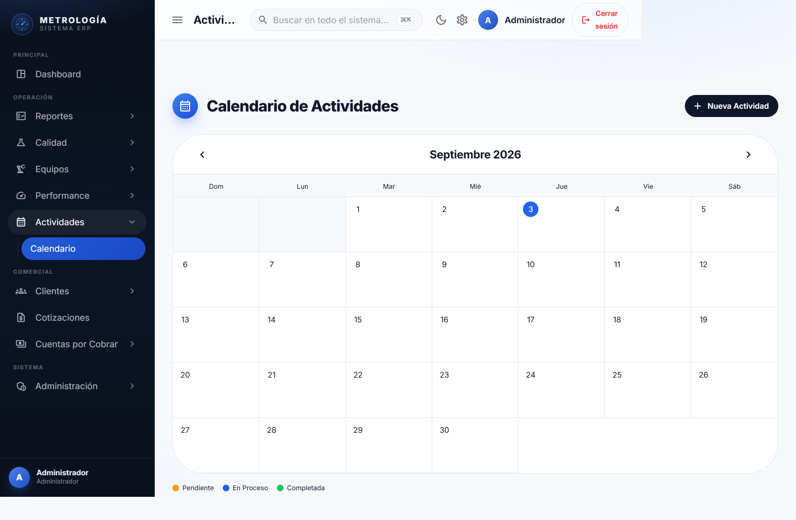
Calendario de actividades. Visitas, recolecciones, entregas y pendientes del laboratorio.
Clic en un día del calendario para crear una actividad.
Captura título, fecha/hora, responsable y notas.
Guardar. La actividad aparece en el calendario y puede editarse haciendo clic sobre ella.
16 · Administración
Solo Admin · Menú: Administración. Esta sección siempre es exclusiva del administrador: nadie puede quitarse ni darse permisos a sí mismo.
16.1 Usuarios
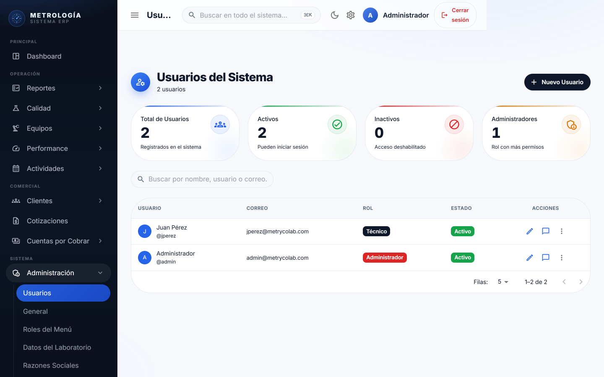
Usuarios.
Clic en Nuevo usuario.
Captura nombre, usuario (para entrar), correo y rol.
Asigna una contraseña inicial. Pídele a la persona que la cambie al primer ingreso.
El estatus Activo / Inactivo habilita o bloquea el acceso sin borrar la cuenta (así el historial sigue siendo legible).
Para "resetear" una contraseña olvidada: abre el usuario, escribe una contraseña nueva y guarda.
16.2 Datos del Laboratorio
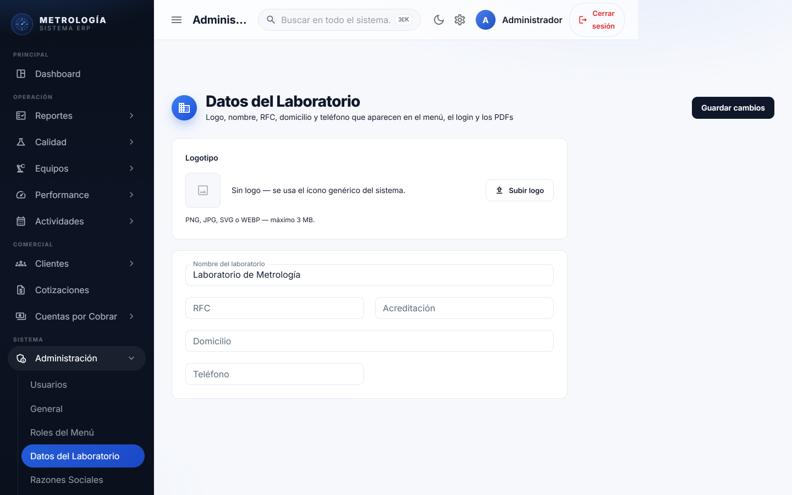
Datos del Laboratorio. Nombre, acreditación, domicilio, logo. Aparecen en certificados, cotizaciones y documentos imprimibles.
16.3 Razones Sociales
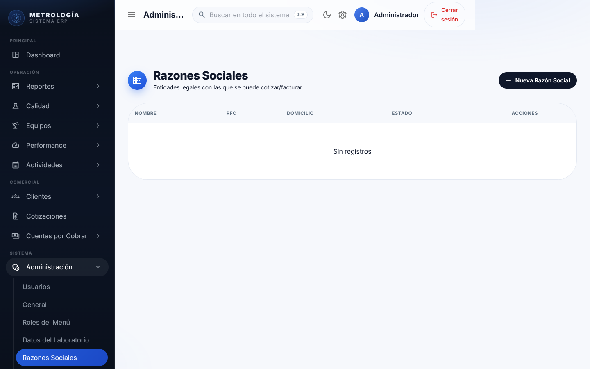
Razones Sociales. Si el laboratorio factura con más de una razón social, se administran aquí.
16.4 Colores
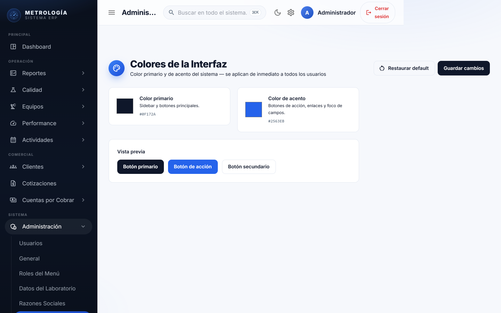
Colores. Color primario y secundario de la interfaz. El cambio se ve al instante para todos.
16.5 Roles del Menú
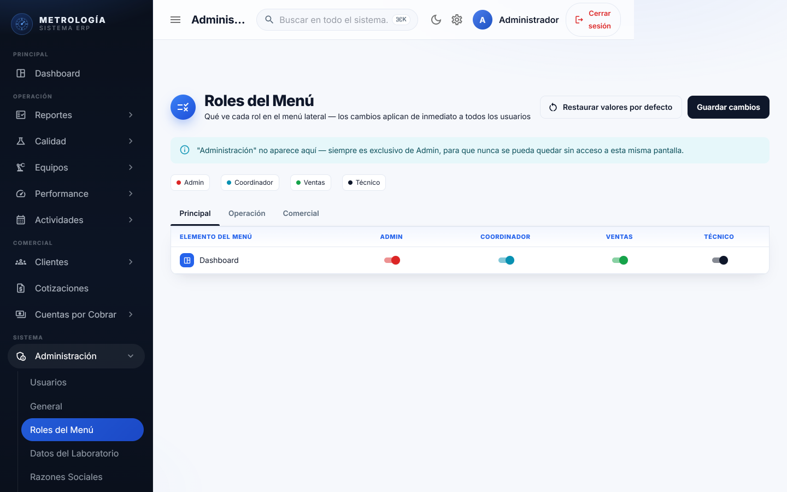
Roles del Menú. Marca qué rol ve cada opción del menú. La sección Administración queda fuera a propósito.
Busca la opción del menú en la lista.
Marca o desmarca las casillas de cada rol.
Guardar. El cambio aplica de inmediato la próxima vez que cada usuario cargue el sistema.
16.6 Auditoría
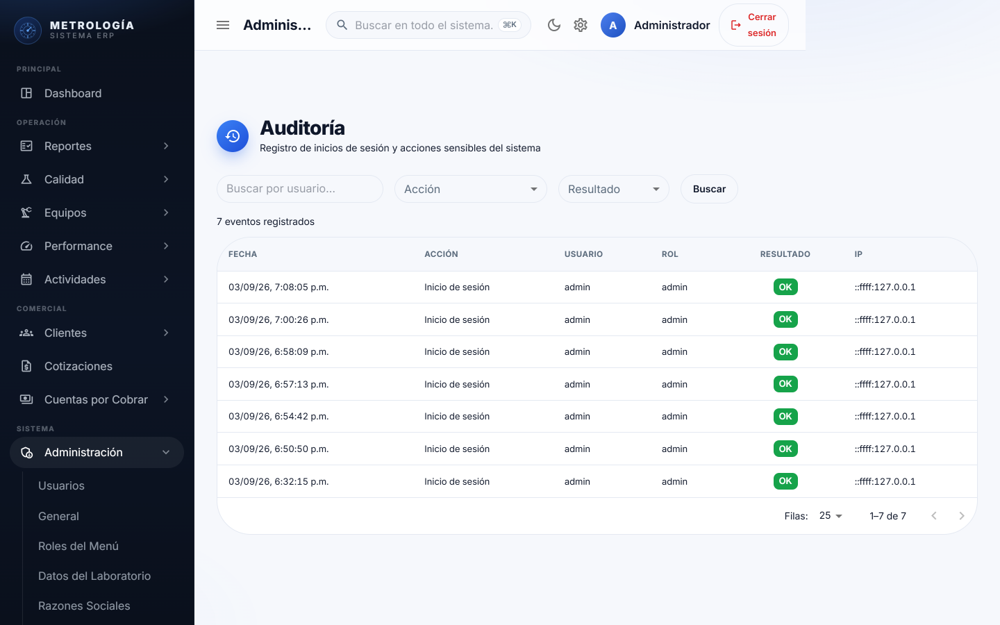
Auditoría. Registro de acciones sensibles (quién, qué, cuándo): altas, cambios de estado, eliminaciones, accesos.
17 · Preguntas frecuentes y problemas comunes
No puedo entrar
"Usuario o contraseña incorrectos": revisa mayúsculas y que no haya espacios. Si sigues sin poder, pide al admin que te reponga la contraseña.
"Demasiados intentos": espera unos minutos; el bloqueo se quita solo.
"No se pudo conectar con el servidor": problema de red o el servidor está caído. Avisa a soporte.
No veo una opción del menú
Tu rol no la tiene asignada. Pide al administrador que la habilite en Administración → Roles del Menú.
No me deja emitir el certificado
La calibración de la asignación debe estar Terminada.
Los cálculos de incertidumbre deben estar aprobados.
Ningún patrón usado puede estar vencido. Revísalo en Patrones.
El equipo no aparece al asignarlo a un reporte
El equipo debe estar dado de alta con el mismo cliente del reporte. Créalo en Equipos → Alta de Equipo.
La firma no sale en el certificado
Cada firmante debe cargar su imagen de firma en engrane ⚙ → Firma digital.
El PDF sale con encabezados/pies del navegador
Al imprimir, en "Más ajustes" del navegador desactiva "Encabezados y pies de página" y pon márgenes "Predeterminado".
Cambié un dato del cliente y un certificado viejo no cambió
Es correcto: los certificados guardan una copia congelada de los datos al momento de emitirse. No se actualizan hacia atrás.
18 · Glosario
Término
Qué es
Reporte de Servicio
Expediente de un ingreso de equipos de un cliente. Agrupa todas las asignaciones.
Asignación
Un equipo concreto, dentro de un reporte, asignado a un técnico y a unos patrones.
Patrón
Instrumento de referencia del laboratorio, trazable, con el que se calibran los equipos del cliente.
Trazabilidad
Cadena documentada que liga la medición con un patrón nacional/internacional (CENAM, NIST…).
Incertidumbre (U)
Rango dentro del cual está el valor verdadero, con cierta probabilidad. U es la incertidumbre expandida.
k
Factor de cobertura. Para 95.45% de confianza, k ≈ 2. Relación: u = U / k.
GUM
Guía para la expresión de la incertidumbre de medida (JCGM 100:2008). El método que usa el sistema.
EA-4/02
Documento europeo que complementa la GUM para laboratorios de calibración.
Contribución (tipo A / B)
Cada fuente de incertidumbre. A: se estima con datos/estadística (repetibilidad). B: se estima de otra info (certificado, resolución, especificación).
Deriva
Cambio del patrón con el tiempo. Se incluye como contribución rectangular.
EMP
Error Máximo Permisible (MPE). Límite de aceptación del instrumento para decidir PASA / NO PASA.
Snapshot
Copia congelada de datos (equipo, cliente, patrones) guardada dentro del certificado al emitirlo.
Token público
Código del enlace/QR de verificación de un certificado, accesible sin iniciar sesión.